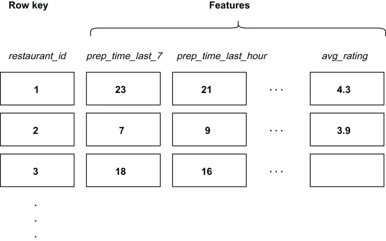

Models intended for deployment in near real-time mode have stringent latency requirements and cannot reliably be expected to compute features that require access to traditional data stores in a performant manner. You cannot consistently achieve sub-second query response times with a traditional relational database.
那些打算以近乎实时模式部署的模型，有着严格的延迟要求；你不能可靠地指望它们以高性能的方式去计算那些需要访问传统数据存储的特征。用传统的关系数据库，是无法稳定地做到亚秒级查询响应时间的。
Therefore, it is necessary to establish ancillary processes to precompute and index these necessary model features. Once computed, these features should be stored in a low-latency datastore, known as a feature store, where they can be accessed quickly at prediction time, as shown in figure 11.3.
因此，有必要建立一些辅助流程，来预先计算并为这些模型所必需的特征建立索引。一旦算好，这些特征就应当被存放在一个低延迟的数据存储中，即所谓的特征存储（feature store）——在那里，它们可以在预测时刻被快速访问到，如图 11.3 所示。

Figure 11.3 The restaurant feature store uses the unique restaurant_id field as the row key, and each row contains several features for each restaurant. Some of the features are specific to the delivery time estimation model, while others are not.
图 11.3 餐厅特征存储用那个唯一的 restaurant_id 字段作为行键，而每一行都包含了每家餐厅的若干特征。其中有些特征是专属于送达时间预估模型的，有些则不是。
As I mentioned earlier, our feature store is kept inside a low-latency column-centric database, such as Apache Cassandra, which is designed to permit a large number of columns per row without incurring a performance penalty during the data retrieval process. This allows us to store features required by various ML models in the same table (e.g., delivery time estimation fields, such as average prep time, can be stored alongside features used by the restaurant recommendation model, such as the average customer rating). Consequently, we don’t need to maintain a separate table for each model we want to use (restaurant_time_delivery_features, etc.). Not only does this simplify the management of the feature store database, but it also promotes the usage of features across ML models.
正如我前面提到的，我们的特征存储被放在一个低延迟的、以列为中心的数据库里，例如 Apache Cassandra——它被设计成允许每行有大量列，而不会在数据检索过程中招致性能损失。这让我们能够把各种 ML 模型所需的特征存放在同一张表中（例如，送达时间预估所用的那些字段，比如平均备餐时间，可以和餐厅推荐模型所用的那些特征，比如平均客户评分，存放在一起）。这样一来，我们就不必为每一个想用的模型都单独维护一张表（例如 restaurant_time_delivery_features 等等）。这不仅简化了特征存储数据库的管理工作，也促进了特征在多个 ML 模型之间的复用。
In most organizations, the design of the tables within the feature store falls squarely on the data science team, since they are the primary consumers of the feature store. Therefore, you will often only be provided the ML model along with a list of the features it requires as input when your company is ready to roll out the model to production.
在大多数组织中，特征存储内部那些表的设计工作，都完全落在数据科学团队头上——因为它们是特征存储的主要消费者。因此，当你的公司准备把某个模型推广到生产环境时，你往往只会拿到那个 ML 模型，以及一份它所要求的输入特征清单。